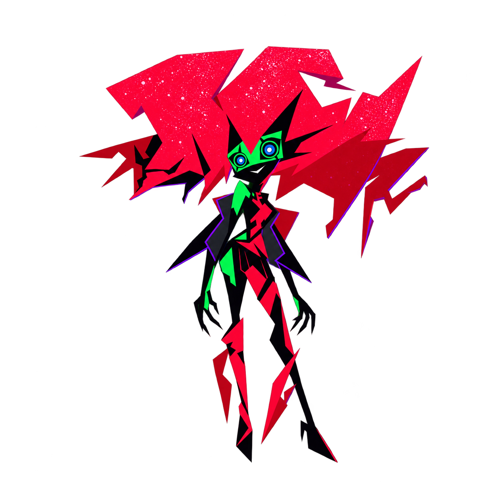

✧
Présence animée
Un personnage sur le bureau avec des expressions et réactions.
Un compagnon IA animé qui prend vie sur le bureau. Une expérience expressive, locale et personnalisable, dans une ambiance anime.
Capri est un projet tiers. Cette page présente sa personnalisation par Zyren, sans affiliation officielle.

Une reconstitution interactive inspirée de ta capture : Mainframe, menu contextuel, déplacement et expressions. Clique droit sur Capri pour afficher ses actions.
Démonstration web locale inspirée de l'interface Capri montrée sur ta capture. Les noms, menus et paramètres servent à la présentation ; aucun réglage réel n'est modifié.
Un personnage sur le bureau avec des expressions et réactions.
Configuration de Capri avec Ollama et des modèles exécutés localement.
Expérimentations de commandes et de réponses parlées.
Personnalisation anime / kuudere, avec une attention particulière au caractère.
Intégration au bureau et tests d’interaction avec les applications.
Travail sur le lancement, la stabilité et la réactivité du compagnon.
Capri a son propre site et ses développeurs. Cette page présente l’environnement local et les personnalisations expérimentées par Zyren.
Découvrir Capri officiel ↗Ajoute ton propre enregistrement. Le lecteur apparaîtra automatiquement lorsque le fichier vidéo sera disponible.
Dépose capri.mp4 dans assets/videos/. Aucun faux enregistrement n'est présenté comme une vidéo réelle.